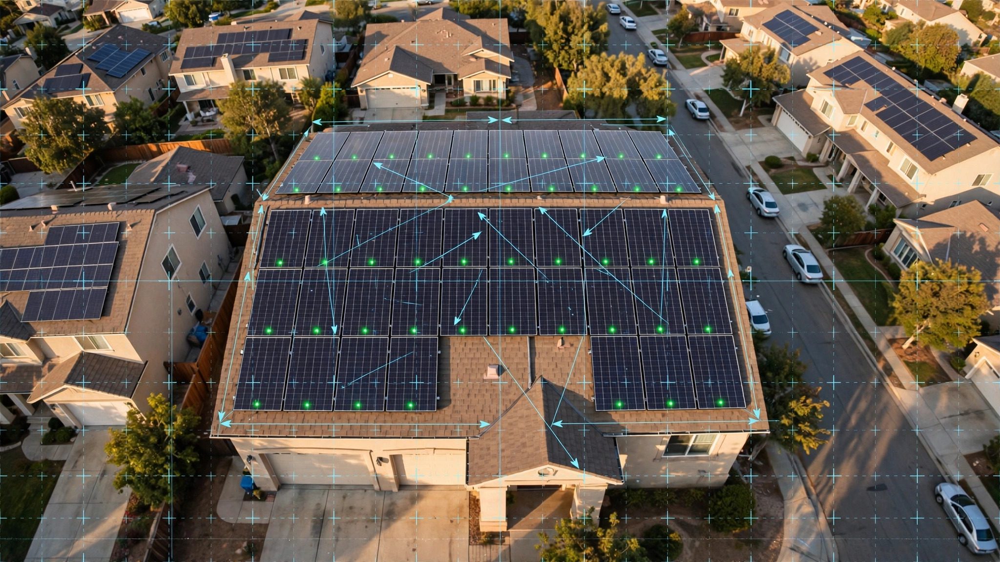

System and Method for Passive Residential Foundation Deformation Monitoring Using Differential GNSS Carrier-Phase Measurements from Rooftop Solar Microinverter Telemetry Arrays

Abstract
Disclosed is a system and method for continuous, passive monitoring of residential foundation deformation by embedding low-cost multi-constellation GNSS receivers into rooftop solar panel microinverters and computing carrier-phase differential positioning solutions between receivers mounted at known positions on the same roof structure. Each microinverter module (e.g., Enphase IQ8+, SolarEdge P505) already provides persistent power, wireless telemetry (WiFi, power-line communication, or cellular), and a known mounting position defined during installation permitting. By adding a GNSS receiver chipset (e.g., u-blox ZED-F9P, BOM cost $25 at volume, or next-generation L1/L5 integrated chipsets at $5-8) with a compact patch antenna co-mounted on the microinverter housing, each panel position becomes a permanently installed, solar-powered, network-connected geodetic monitoring point. The system computes double-differenced carrier-phase solutions between microinverter pairs on the same roof at 1 Hz cadence, achieving sub-millimeter relative positioning accuracy after 24-hour observation sessions. A time-series analysis module running on the home gateway or cloud backend detects foundation settlement (uniform vertical displacement), differential settlement (tilt), lateral translation, and seasonal heave cycles characteristic of expansive clay soils. When displacement rates exceed configurable thresholds (default: 2 mm/year vertical, 1 mm/year differential tilt), the system generates homeowner alerts with structural severity classification and recommended engineering follow-up actions.
Field of the Invention
This invention relates to structural health monitoring of residential buildings, specifically to the repurposing of rooftop solar photovoltaic microinverter infrastructure as a distributed geodetic sensor network for detecting foundation movement through precision GNSS positioning.
Background
Foundation distress is the single most costly category of residential structural damage in the United States. The Insurance Information Institute estimates that foundation-related claims and repairs cost U.S. homeowners approximately $5-7 billion annually. The American Society of Civil Engineers' 2025 Infrastructure Report Card grades residential foundation performance as a growing concern, particularly in regions with expansive clay soils (affecting an estimated 25% of U.S. housing stock) and in areas experiencing subsidence from groundwater withdrawal.
Current residential foundation monitoring methods are either expensive, episodic, or both:
- Visual inspection: Homeowners or inspectors look for cracks in drywall, brick veneer, and foundation walls. By the time cracks are visible (typically exceeding 3 mm width), significant settlement has already occurred. A University of Memphis study (Chen, 2016) found that 60% of residential foundation damage reaches the "moderate" severity stage before homeowners notice symptoms.
- Professional surveying: Licensed surveyors use total stations or precision levels to measure floor elevation profiles. Cost: $500-$1,500 per survey. Frequency: typically once during a real estate transaction or after damage is suspected. Provides a single snapshot with no temporal trending.
- Crack gauges and tiltmeters: Permanently installed analog or digital instruments that measure crack width or structural tilt over time. Cost: $200-$800 per sensor installed. Require professional installation and periodic data retrieval. Provide local measurements at specific points, not whole-structure deformation fields.
- InSAR (Interferometric Synthetic Aperture Radar): Satellite-based radar interferometry can detect ground surface displacement at millimeter precision over large areas. Bonì et al. (Remote Sensing of Environment, 2020) demonstrated 1-2 mm/year accuracy for urban subsidence mapping. However, InSAR has revisit intervals of 6-12 days (Sentinel-1), cannot resolve individual residential structures from orbit, and requires specialized processing that is not available as a consumer product.
Meanwhile, rooftop solar installations have reached massive scale. The Solar Energy Industries Association (SEIA) reports that as of Q1 2026, approximately 5.2 million U.S. homes have rooftop solar, with 500,000+ installations added per year. The dominant residential inverter architecture is now module-level power electronics (MLPE): microinverters (Enphase, ~55% market share) or DC power optimizers (SolarEdge, ~25%), meaning each panel has its own permanently mounted, powered, network-connected device on the roof.
Precision GNSS positioning has simultaneously undergone a cost revolution. The u-blox ZED-F9P receiver ($25 in volume) achieves 1 cm RTK positioning and sub-millimeter static positioning with 24-hour carrier-phase solutions. The Broadcom BCM47765 and Qualcomm QCS6490 integrate dual-frequency (L1/L5) GNSS capability into $5-8 chipsets originally designed for smartphones, with carrier-phase measurement output available through raw measurement APIs. Google's Android GNSS raw measurements API (available since Android 7.0) demonstrated that consumer-grade GNSS hardware can output carrier-phase observables suitable for precision positioning when processed with appropriate algorithms.
The gap in the art is a system that: (a) leverages the existing installed base of rooftop solar microinverters as mounting platforms for GNSS receivers, (b) computes relative positioning between receivers on the same roof with sub-millimeter accuracy using carrier-phase differential techniques, (c) performs continuous temporal monitoring to detect foundation movement trends over weeks to years, (d) classifies movement patterns into actionable structural categories (uniform settlement, differential settlement, lateral translation, seasonal heave), and (e) delivers alerts and recommendations to homeowners through existing solar monitoring platforms.
Detailed Description
1. GNSS Receiver Integration with Microinverter Hardware
Each solar panel microinverter is augmented with a GNSS receiver module and a compact ceramic patch antenna. The GNSS receiver (reference design: u-blox ZED-F9P or equivalent multi-constellation, multi-frequency receiver) is integrated onto the microinverter's main PCB or attached as a daughter board within the existing IP67-rated enclosure. The patch antenna (25 mm × 25 mm × 4 mm, e.g., Taoglas CGGP.25.4.A.02) is mounted on the top surface of the microinverter housing, oriented skyward.
The GNSS receiver is configured to output raw carrier-phase observations on GPS L1/L2 (or L1/L5), GLONASS L1/L2, Galileo E1/E5a, and BeiDou B1I/B2a at 1 Hz. Multi-constellation, dual-frequency operation is essential for resolving integer ambiguities in the short baselines (2-10 m) between microinverters on the same roof. The receiver operates in continuous mode during daylight hours (when solar power is available) and in a reduced-duty-cycle mode (1-minute observation every 15 minutes) during nighttime using the microinverter's standby power or a small supercapacitor buffer.
Power consumption for the GNSS receiver is approximately 70-130 mW during active tracking (u-blox ZED-F9P: 68 mW typical). This represents less than 0.05% of the energy produced by a 400W solar panel during peak hours, an operationally negligible overhead. During nighttime reduced-duty mode, average power consumption drops to approximately 8 mW, well within the standby budget of modern microinverters.
The GNSS receiver transmits raw observation data (RINEX-format or proprietary binary) to the home's solar monitoring gateway (e.g., Enphase IQ Gateway, SolarEdge SetApp hub) via the microinverter's existing communication channel: power-line communication (PLC) for Enphase systems, or WiFi/ZigBee for SolarEdge systems. Each 1-second observation epoch generates approximately 200 bytes of data per receiver. For a typical 20-panel system, this produces approximately 4 KB/s aggregate data throughput on the PLC network, well within the 2-4 Mbps capacity of modern PLC modems.
2. Carrier-Phase Differential Positioning
The system computes relative positions between microinverter-mounted GNSS receivers using double-differenced carrier-phase observables. For a pair of receivers A and B observing satellites i and j simultaneously:
∇ΔφABij = ∇ΔρABij/λ + ∇ΔNABij + ε
where ∇Δφ is the double-differenced carrier phase (cycles), ∇Δρ is the double-differenced geometric range, λ is the carrier wavelength (19.0 cm for GPS L1, 25.5 cm for L5), ∇ΔN is the double-differenced integer ambiguity, and ε is the residual noise term.
For baselines shorter than 10 m (typical intra-roof distances), atmospheric delay terms (tropospheric and ionospheric) cancel nearly completely in the double-difference, leaving the integer ambiguity ∇ΔN as the primary unknown. With dual-frequency observations, the wide-lane combination (wavelength 86.2 cm) enables rapid integer ambiguity resolution using the LAMBDA (Least-squares AMBiguity Decorrelation Adjustment) algorithm, typically converging within 60 seconds of observation for baselines under 10 m.
Once integer ambiguities are resolved and fixed, the baseline vector between receivers A and B is determined with a formal precision of approximately:
- Horizontal (North, East): 0.3-0.5 mm for a 1-hour observation session, 0.1-0.2 mm for a 24-hour session
- Vertical (Up): 0.8-1.5 mm for a 1-hour session, 0.3-0.5 mm for a 24-hour session
These precision levels are derived from the well-established relationship σbaseline ≈ σphase × λ / √(Nobs × Nsat), where σphase is the carrier-phase measurement noise (typically 1-2 mm for a quality receiver), Nobs is the number of observation epochs, and Nsat is the average number of common satellites tracked. For a rooftop installation with clear sky view, 12-18 satellites are typically visible across four constellations.
The home gateway computes daily baseline solutions for all unique receiver pairs. For a 20-panel system, this yields (20 × 19)/2 = 190 baseline vectors, massively over-determining the roof geometry and providing internal consistency checks that flag receiver faults or multipath contamination.
3. Foundation Deformation Classification
The daily baseline solution time series is analyzed by a deformation classification module that distinguishes five categories of foundation movement:
Uniform settlement: All receivers on the same roof plane exhibit a consistent downward vertical trend. Detected when the mean vertical velocity of all receivers exceeds 2 mm/year and the standard deviation of individual receiver vertical velocities is less than 30% of the mean. This pattern indicates soil consolidation or compaction beneath the entire foundation footprint.
Differential settlement: Receivers on one side or corner of the roof move vertically relative to the opposite side. The system fits a plane to the receiver vertical positions at each epoch. If the plane tilt rate exceeds 0.5 mm/m/year (i.e., 1 mm differential displacement across a 2 m baseline per year), differential settlement is flagged. Tilt direction and magnitude are mapped to the foundation plan to identify the affected bearing wall or footing.
Lateral translation: Horizontal displacement of the entire roof structure in a consistent direction. Indicates lateral soil pressure (e.g., hillside creep, hydrostatic pressure against a basement wall). Detected when the mean horizontal velocity exceeds 1.5 mm/year with a directional consistency ratio (magnitude of mean velocity vector / mean of individual velocity magnitudes) exceeding 0.7.
Seasonal heave cycle: Periodic vertical displacement correlated with soil moisture changes, characteristic of expansive clay soils (montmorillonite, smectite). The system performs a least-squares fit of annual and semi-annual sinusoidal components to the vertical time series. If the annual amplitude exceeds 3 mm and the fit residual is less than 1.5 mm RMS, seasonal heave is classified. Expansive clay regions (Texas, Colorado Front Range, Mississippi Delta, Southern California inland) exhibit heave amplitudes of 5-25 mm in severe cases. The system tracks whether heave is symmetric (full recovery each cycle) or ratcheting (net cumulative displacement over multiple cycles), with ratcheting heave flagged as higher severity.
Seismic co-seismic displacement: For systems located in seismically active regions, the 1 Hz GNSS data stream enables detection of co-seismic permanent displacement during earthquakes. The system computes a pre-event and post-event static solution and reports any permanent offset exceeding the detection threshold (3 mm horizontal, 5 mm vertical). This provides immediate post-earthquake structural assessment without requiring physical inspection.
4. Multipath Mitigation and Quality Control
Rooftop environments present significant GNSS multipath challenges: signals reflect off solar panel glass, metal racking, roof surfaces, and adjacent structures. The system employs multiple mitigation strategies:
Sidereal day filtering: GNSS satellite orbits repeat with a period approximately 4 minutes shorter than a solar day (23h 56m for GPS). Multipath signatures from fixed reflectors repeat with this sidereal period. The system computes sidereal-day-differenced residuals to cancel repeating multipath, reducing systematic errors from ~5 mm to ~0.5 mm.
Signal-to-noise ratio (SNR) weighting: Observations with low SNR (below 35 dB-Hz) are likely multipath-contaminated. The system applies an elevation- and SNR-dependent weighting scheme that downweights suspected multipath observations in the least-squares solution.
Network self-consistency check: With 20+ receivers, the system computes misclosure vectors for all baseline triangles. If the misclosure of a triangle (A→B→C→A) exceeds 2 mm in any component, observations from the receiver common to the worst-performing triangles are quarantined for that epoch. This geometric redundancy is the key advantage of having many receivers on one roof.
Panel-specific antenna calibration: Each microinverter GNSS antenna's phase center offset relative to the panel mounting bolt pattern is factory-calibrated and stored in firmware. When panels are installed at a known tilt angle (from the solar design software, typically 15-30° from horizontal on pitched roofs), the system applies tilt-dependent phase center variation corrections to the carrier-phase observations.
5. Network-Level Monitoring and Neighborhood Baselines
Beyond intra-roof baselines, the system computes inter-roof baselines between neighboring homes. For a typical suburban street with 30% solar adoption, 3-5 neighboring homes within 100 m provide reference baselines that distinguish whole-structure movement (one house settling) from area-wide ground motion (regional subsidence).
Inter-roof baselines have longer separation distances (50-100 m) and slightly higher atmospheric residuals, but achieve sub-millimeter precision with 24-hour solutions at these distances. The system constructs a neighborhood deformation graph where each node is a home and each edge is a baseline. A graph neural network classifier trained on labeled deformation patterns (foundation settlement, regional subsidence, measurement artifact) assigns anomaly scores to each home in the network context.
When a utility company or municipality has dense solar adoption in a service territory, the aggregate network provides a continuous subsidence map comparable in spatial resolution to InSAR but with higher temporal resolution (daily versus 6-12 day repeat) and direct structural attribution (per-building, not per-pixel).
6. Alert Generation and Homeowner Interface
Alerts are delivered through the existing solar monitoring mobile application (e.g., Enphase Enlighten, SolarEdge mySolarEdge) or via push notification and email. Alert severity levels:
- Advisory (Green): Movement detected but within normal range. Seasonal heave cycle identified. Informational only.
- Watch (Yellow): Displacement rate exceeds 2 mm/year vertical or 1 mm/year differential tilt. Recommend visual inspection of interior walls and foundation perimeter within 30 days.
- Warning (Orange): Displacement rate exceeds 5 mm/year vertical or 3 mm/year differential tilt. Recommend professional structural engineering evaluation within 14 days.
- Critical (Red): Displacement rate exceeds 10 mm/year vertical, or cumulative displacement exceeds 25 mm from baseline. Recommend immediate professional assessment. System generates a PDF report suitable for submission to homeowner's insurance carrier.
The alert includes a 3D visualization of the roof deformation field, a time-series plot of vertical and horizontal displacement at each receiver, the deformation classification category, and a list of licensed structural engineers in the homeowner's area sourced from the relevant state PE licensing board.
7. Figures Description
- Figure 1: System architecture showing GNSS receiver integration with solar microinverter, PLC data path to gateway, and cloud-based deformation analysis pipeline.
- Figure 2: Double-differenced carrier-phase positioning geometry for a four-receiver rooftop array, showing baseline vectors and satellite lines of sight.
- Figure 3: Example differential settlement time series from a 20-panel roof over 18 months, showing the onset of 4 mm/year northeast corner settlement with seasonal heave modulation.
- Figure 4: Neighborhood-level deformation graph showing inter-roof baselines, with one home (Node 4) exhibiting anomalous settlement while neighbors remain stable.
- Figure 5: Alert interface mockup in a solar monitoring application showing roof deformation heatmap, time-series plots, and recommended actions.
Claims
- A system for monitoring residential foundation deformation, comprising: a plurality of GNSS receivers, each integrated with a solar panel microinverter mounted on a residential rooftop; wherein each GNSS receiver outputs carrier-phase observations on at least two frequencies from at least two satellite constellations; and a processing module that computes double-differenced carrier-phase baseline solutions between pairs of said GNSS receivers to determine relative positional changes with sub-millimeter precision over observation periods of 24 hours or more.
- The system of claim 1, wherein the GNSS receivers use the microinverter's existing power supply and communication channel (power-line communication, WiFi, or ZigBee) to transmit raw observation data to a home gateway, requiring no additional wiring or power infrastructure.
- The system of claim 1, further comprising a deformation classification module that analyzes time series of baseline solutions to categorize foundation movement into one or more of: uniform settlement, differential settlement, lateral translation, seasonal heave, and co-seismic displacement.
- The system of claim 3, wherein the deformation classification module detects seasonal heave by fitting annual and semi-annual sinusoidal components to vertical displacement time series and distinguishing symmetric heave cycles from ratcheting heave with net cumulative displacement.
- The system of claim 1, further comprising a multipath mitigation module that applies sidereal-day filtering, signal-to-noise ratio weighting, and network triangle misclosure checks to reduce rooftop multipath contamination in the carrier-phase solutions.
- The system of claim 1, wherein inter-roof baselines computed between GNSS receivers on neighboring homes distinguish individual foundation settlement from regional ground subsidence by comparing the displacement of a single structure against a neighborhood reference frame.
- A method for passive foundation monitoring comprising: embedding GNSS receivers in rooftop solar microinverters during manufacturing or as a retrofit module; computing daily double-differenced carrier-phase baseline solutions between all receiver pairs on the same roof; analyzing displacement time series to detect and classify foundation movement patterns; and generating severity-classified alerts to homeowners through existing solar monitoring applications when displacement rates exceed configurable thresholds.
- The method of claim 7, further comprising constructing a neighborhood deformation graph from inter-roof baselines and applying a graph neural network classifier to distinguish per-building foundation anomalies from area-wide ground motion.
- The system of claim 1, wherein the GNSS receiver patch antenna is factory-calibrated for phase center offset relative to the microinverter mounting bolt pattern, and tilt-dependent phase center variation corrections are applied based on the known panel installation angle from solar design software.
- The method of claim 7, wherein co-seismic permanent displacement is detected by comparing pre-event and post-event static GNSS solutions computed from 1 Hz carrier-phase data, enabling immediate post-earthquake structural assessment without physical inspection.
Implementation Notes
The system is implementable with commercially available components. The u-blox ZED-F9P ($25 at volume) or Septentrio mosaic-go ($90) provide dual-frequency multi-constellation carrier-phase output. Next-generation integrated GNSS chipsets (Broadcom BCM47765, Qualcomm SDX75) are expected to reduce the BOM cost of dual-frequency carrier-phase capability to $5-8 by 2027. The RTKLIB open-source software library provides a complete implementation of the LAMBDA integer ambiguity resolution algorithm and double-differenced positioning engine. Enphase and SolarEdge microinverters already contain 32-bit ARM Cortex-M processors with sufficient spare capacity to run a GNSS data compression and transmission module alongside the existing MPPT and grid-tie control firmware.
A practical deployment path is firmware-upgradeable: future microinverter hardware revisions include the GNSS chipset and antenna by default, while existing installations can be retrofitted with a clip-on GNSS module that taps into the microinverter's PLC bus via an inductive coupler. The retrofit module would contain its own small solar cell (0.5W) and supercapacitor for independent power, communicating with the home gateway on the same PLC frequency as the microinverter.
Prior Art References
- Insurance Information Institute — Homeowners insurance statistics including foundation damage costs
- ASCE 2025 Infrastructure Report Card — Residential infrastructure condition assessments
- Chen (2016), University of Memphis — Expansive soil foundation damage severity progression
- Bonì et al., Remote Sensing of Environment, 2020 — InSAR urban subsidence mapping at 1-2 mm/year accuracy
- SEIA Solar Industry Research Data — U.S. residential solar installation statistics (5.2M homes, Q1 2026)
- u-blox ZED-F9P — Multi-constellation, multi-frequency GNSS receiver with carrier-phase output ($25 volume)
- Android GNSS Raw Measurements API — Carrier-phase observables from consumer GNSS hardware
- RTKLIB — Open-source GNSS positioning library with LAMBDA ambiguity resolution
- Enphase IQ8+ Microinverter — Dominant residential MLPE platform with PLC telemetry
- SolarEdge Power Optimizers — DC-optimized residential inverter platform with per-panel monitoring
- Teunissen & Montenbruck, Handbook of Global Navigation Satellite Systems, 2017 — LAMBDA algorithm and double-differenced positioning theory
- Taoglas CGGP.25.4.A.02 — Compact GNSS ceramic patch antenna (25×25×4 mm)